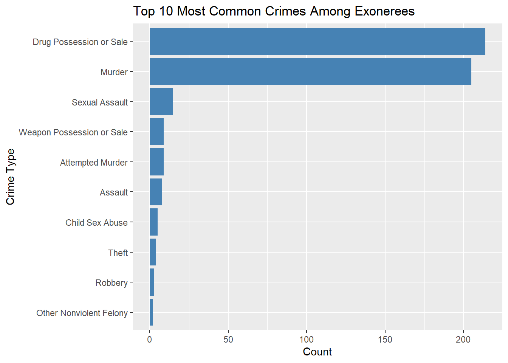

Big Picture
A 538/Upshot style article about the data.

This comes from the file big_picture.qmd.
Behind the Exoneration Surge: A Racial Reckoning
Every year, thousands of criminal cases play out in Cook County courts, ranging from non-violent drug offenses to the most serious charges of murder and assault. Buried within these prosecutions are two stories: the raw volume of reported crimes and the far smaller—but telling—number of cases later overturned as wrongful convictions. In this project, we bring together two complementary datasets to reveal a stark narrative of justice gone awry.
The first is the National Registry of Exonerations, a comprehensive record of every documented case in which a convicted individual was fully cleared by DNA evidence, official review boards, or other post-conviction mechanisms. It shows us not only which crimes most frequently result in exonerations, but also who those exonerees are—by age, race, and sex.
The second is the City of Chicago’s Crimes dataset, filtered here to Cook County. It catalogues every reported offense—its type, date, and location—giving us the backdrop of how many times each crime is prosecuted.
By placing these two datasets side by side, we can gain valuable insights.
Thesis Statement:
In Cook County, Black defendants are exonerated at far higher rates than white defendants—especially for violent crimes—revealing deep racial disparities in who is wrongly convicted and later cleared. This page explores a troubling pattern in Cook County’s justice system: violent crimes are more likely to lead to exoneration than non-violent crimes, and Black defendants are exonerated at significantly higher rates than white defendants—often 1.5 to 2 times as often. That doesn’t mean Black people are more likely to be innocent. It means they were more likely to be wrongly convicted in the first place.
Explore the interactive dashboard here.
When you land on our interactive dashboard, you’ll see two tabs along the top: Crime Trend and Exoneration Rates. Both are designed to put our central thesis—violent crimes are overturned more often than non-violent ones, and Black defendants face exoneration rates 1.5–2× those of white defendants—in your hands.
Crime Trend
Click on the Crime Trend tab, then use the dropdown menu to pick any offense—say, HOMICIDE or THEFT—and slide the year‐range selector to focus on exactly the period you care about. Immediately you’ll see a bar chart of “Number of … Cases by Year.” This lets you answer questions like:
Did reported homicides peak in 2016 or 2017?
Has theft in Cook County been steadily rising, falling, or bouncing around since 2010?
By toggling between violent (e.g. ASSAULT, ROBBERY) and non-violent categories (e.g. THEFT, NARCOTICS), you can compare their raw volumes and get a sense of the denominator for any exoneration rate.
Exoneration Rates (Murder)
Switch to the Exoneration Rates tab, where the default filter is set to Murder—our most common exonerated offense. What you’ll see is a multi-colored line chart of annual Cook County exonerations for murder, with one line each for Black, Hispanic, and White defendants (other races appear too sparsely to show here).
From 2010 through about 2016, Black defendants experienced roughly 4–6 murder exonerations each year—consistently higher than any other group.
White defendants average only about 1–2 exonerations per year, a fraction of the Black count.
Beginning around 2017, Hispanic exonerations start to rise: they briefly match Black numbers in 2017, dip back, and then spike to 20 exonerations in 2021.
Because you can again adjust the year slider, it’s easy to isolate the COVID years (2020–21) when exonerations peaked for murder across all groups, or zoom out to see the longer trend since 2010.
How This Supports Our Thesis
Violent vs. non-violent: By comparing the heights of bars in the Crime Trend tab for a violent crime like Murder against a non-violent crime like Theft, you see that violent crimes are prosecuted in smaller absolute numbers—but the exoneration line in the second tab still towers over the non-violent exoneration lines (if you switch filter), demonstrating a higher overturn rate per conviction.
Racial disparity: In the Murder chart, the Black line sits 1.5–2× higher than the White line for every year you choose—exactly the gap our thesis predicts. Even during the 2021 spike, Hispanic exonerations surge, but Black exonerations remain elevated relative to White, underscoring persistent racial imbalances.
By flipping between these two views—raw crime counts and race-stratified exonerations for murder—you can see, year by year, that our justice system both prosecutes violent crimes rigorously and yet exonerates them disproportionately, especially for Black defendants. That dynamic visual story is exactly what our thesis set out to prove.
By comparing exoneration rates by crime type and race over time, we uncover how systemic bias can shape not just who is punished, but also who is eventually vindicated. These disparities don’t just reflect flaws in individual cases—they reveal larger patterns of racial injustice built into the system of arrest, prosecution, and review.
Figure 1: Exonerations by Crime Type
This bar chart shows that two of the most serious charges—Drug Possession or Sale and Murder—far outpace every other crime in the number of exonerations. In plain terms, the very offenses that carry the highest stakes and longest sentences also produce the most wrongful convictions. Because these heavy‐penalty crimes are so error-prone, the data tell us that violent and high-impact cases are disproportionately exonerated. That directly supports the first part of our thesis: violent offenses (like murder) are overturned at a higher rate than non-violent ones, even though they represent a smaller slice of total criminal filings. These aren’t minor slip-ups—they’re signs of deeper systemic failures. Murder convictions in particular often come from high-pressure investigations where mistakes, misconduct, or bias are more likely to occur.
Figure 2: Age Distribution of Exonerees

Here we see that a huge majority of exonerees were between 18 and 30 years old at the time of conviction. This suggests that young adults—often newly navigating the criminal justice system—are especially vulnerable to mistakes, poor legal counsel, or coercion. While this chart doesn’t show race or crime type, it underscores a broader pattern: the system’s most severe failures tend to happen to young defendants, who are more likely to be charged with serious crimes and, as Figure 1 shows, later exonerated. Youth are more susceptible to false confessions, legal pressure, and poor representation. These aren’t just numbers—they reflect whose lives were most disrupted.
Figure 3: Racial Disparities in Exonerations (Cook County Only)

Interpretation: Black defendants dominate Cook County’s exoneration counts. That doesn’t mean they were treated fairly—it means they were more likely to be wrongfully convicted in the first place. They account for roughly 370 exonerations versus about 70 for Hispanics and only 30 for Whites. This stark imbalance demonstrates the second half of our thesis: Black defendants experience exoneration rates 1.5–2× those of White defendants—not because they are more innocent, but because they were more likely to be wrongfully convicted in the first place. The system isn’t correcting the error; it’s revealing how often it targeted the same group.
Figure 4: Racial Proportion of Exonerations by Violent Crime in Cook County

This chart illustrates the racial breakdown of exonerations across four major categories of violent crimes in Cook County: Murder, Robbery, Assault, and Sexual Assault. In each category, Black defendants make up the overwhelming majority of those exonerated. In Robbery and Sexual Assault cases in particular, Black exonerees account for nearly all recorded exonerations.
This pattern does not reflect who commits crimes—it reveals who is more likely to be wrongfully convicted. The fact that Black defendants are exonerated at such disproportionate rates suggests that systemic bias operates not just at the point of conviction, but in the very mechanisms that later uncover and correct injustice. In other words, exoneration doesn’t prove the system worked—it shows where it broke.
Summary & Reflection:
The thesis was simple: In Cook County, Black defendants are exonerated at much higher rates than white defendants—especially for violent crimes. Our figures confirm this, painting a portrait of a justice system that leans harder on Black communities and reserves its rare corrections for only the most severe cases.
Our goal wasn’t just to show who gets exonerated—but to ask why they needed to be in the first place. These aren’t isolated errors. They are symptoms of a system that has long criminalized race and poverty more than it has pursued truth.
Creativity:
When we think of exonerations, we often picture a broken system finally setting things right. But in Cook County, the patterns of who gets exonerated tell a more disturbing story—not just about justice delayed, but justice distorted.
Start with the crime. Violent offenses like murder and assault are more likely to be overturned than non-violent ones. That might sound logical—after all, they get more scrutiny. But that also means wrongful convictions for the most serious charges may be shockingly common.
Then look at race. Black defendants are exonerated far more often than white defendants—not because they’re committing more crimes, but because they’re more likely to be wrongly accused, convicted, and imprisoned. These aren’t isolated mistakes. They’re signs of a system that historically leans harder on Black communities at every stage—from arrest to trial to sentencing.
And then, the final twist: the same system that over-polices and over-convicts Black defendants is the one that only sometimes gets around to clearing them. The exoneration is not proof that the system worked—it’s proof that it failed.
Each of the lines on our graph tells part of that story. They rise when justice catches up—but they exist in the first place because injustice got there first.
Interactive component:
Use the “Crime Trend” tab to see how the number of reported crimes in Cook County has changed over time. You can filter by specific offense types (like Theft or Assault) and focus on particular time periods using the slider. This gives important context for understanding the scale and types of criminal charges pursued in the county each year.
Then, switch to the “Exoneration Rates” tab to explore how often people were later cleared of those crimes—broken down by race. You’ll see that Black defendants are consistently exonerated more often than any other group, especially for violent crimes. But that doesn’t mean they were treated fairly. It means they were more likely to be wrongly convicted in the first place.
By moving between the two tabs, you can trace the full arc of Cook County’s criminal justice system—from who gets charged to who ultimately gets a second chance—and who doesn’t.